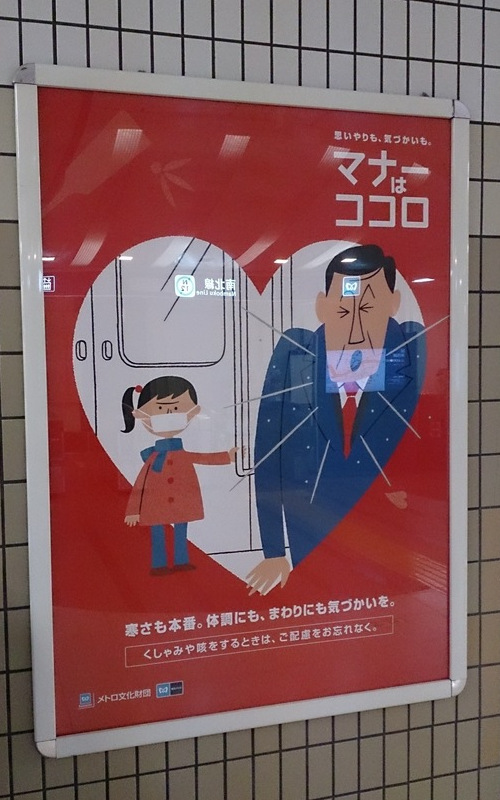

Il y a, dans les grandes sociétés, plusieurs canaux par lesquels un petit nombre d'individu façonne le consensus du plus grand nombre. Le choix de s'exposer ou non à ces mécanismes nous est parfois offert : nous pouvons par exemple décider de ne pas écouter les chaînes de radio commerciales, ou de ne pas regarder les journaux télévisés du soir, mais il y en a un auquel il est devenu quasiment impossible d'échapper : la publicité.
Dans le métro pour les citadins, sur le Web, en placement de produit dans les films, la réclame est quasiment omniprésente. Une de ses tactiques : solliciter nos réflexes visuels. Notre œil, attiré par les contrastes et les couleurs vives, se pose sans que nous le lui commandions sur les panneaux publicitaires éclatants. Nous portons inconsciemment notre attention sur tout ce qui bouge (c'est le réflexe optocinétique), d'où les coupures toutes les cinq secondes dans les publicités télévisées. Pour plus d'information à ce sujet, regardez par exemple cette présentation sur les effets de la télévision sur le cerveau.
À Tokyo, contrairement à Grenoble ce sont maintenant les télévisions publiques qui se généralisent. Des écrans sont disposés et imposés aux réflexes du passant dans le métro, les restaurants, etc. Jusqu'au réfectoire de mon université où les murs sont désormais quadrillés d'écrans géants, positionnés de manière à ce que, quelle que soit la position dans laquelle on s'assoit, il y en a toujours un dans son champ de vision.
Ainsi, la publicité est partout et nous impose ses images sans dialogue. (Le petit nombre s'adressant au plus grand nombre.) Il n'y a d'ailleurs pas de publicité que commerciale. On trouve par exemple des publicités sur les règles de conduite, comme l'illustre cette affiche vue dans le métro de Tokyo qui dit : « il faut porter un masque quand vous êtes malade » :

Slogan : マナーはココロ, « sans manières = sans cœur ».
Discussion ¶
Feel free to post a comment by e-mail using the form below. Your e-mail address will not be disclosed.